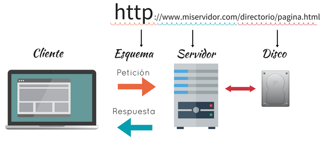

Generalidades de el protocolo HTTP
HTTP, de sus siglas en inglés: "Hypertext Transfer Protocolo", es el nombre de un protocolo el cual nos permite realizar una petición de datos y recursos, como pueden ser documentos HTTML. Es la base de cualquier intercambio de datos en la Web, y un protocolo de estructura cliente-servidor, esto quiere decir que una petición de datos es iniciada por el elemento que recibe los datos (el cliente), normalmente un navegador Web. Así, una página web completa resulta de la unión de distintos subdocumentos recibidos, como, por ejemplo: un documento que especifica el estilo de maquetación de la página web (CSS), el texto, las imágenes, vídeos, scripts, etc.

¿quees un QUERY STRING?

Las Query String o cadenas de consultas es un término que se utiliza para hacer referencia a una interacción con una base de datos. Además, es la parte de una URL que contiene los datos que deben pasar a las aplicaciones web.
En resumen, las Query String permiten acceder a páginas web dinámicas con distintas variables consiguiendo así que las páginas web no estén compuestas de decenas de directorios y permitiendo que su estructura esté basada en URLs amigables.
¿Cómo funcionan y para que sirven las Query Strings?
Antiguamente, las páginas web era estáticas, es decir, solo se modificaban si el programador accedía a los archivos vía FTP y los modificaba. Es decir, no se adaptaban a las acciones del usuario.
Con la llegada de las páginas web dinámicas con valores (Las cuales aparecen como variables) aparecieron las URLs del tipo:
midominio.com/pagina.php?valor1=valor1&valor2=valor2
Para evitar crear miles de directorios con las diferentes variables y crear mega directorios de URLs se crearon las Query string con el fin de realizar consultas a las bases de datos y pintar los datos en URLs amigables.
De este modo, mediante el método GET podrás ver en internet URLs del tipo:
- midominio.com/camiseta-roja (Para ver una camiseta roja de algodón talla M)
Sin tener que ver algo como:
- midominio.com/camiseta-roja?talla=m&material=algodón
Y lo que es mejor, no tendrás que crear como webmaster una URL por cada una de las diferentes variables de la camiseta roja que existan
<>
¿Por lo tanto ¿Son útiles las query string?
Por supuesto, sin ellas, buscar ciertas URL en internet sería una locura y no se podrían crear portales personalizables en función a nuestras interacciones de forma sencilla y económica.
Con la llegada de este tipo de conexiones se simplificó el proceso de experiencia de usuario y los costes de programación de grandes portales o buscadores.
Métodos de petición HTTP
HTTP define un conjunto de métodos de petición para indicar la acción que se desea realizar para un recurso determinado. Aunque también pueden ser sustantivos, estos métodos de solicitud a veces son llamados verbos HTTP . Cada uno de ellos implementan una semántica diferente, pero algunas características son similares compartidas por un grupo de ellos: ej. Un método de solicitud puede ser seguro o almacenable en cache.

DISTINTOS MEDIOS DE PETICION
1)get:
El método GET solicita una representación de un recurso especifico. Las peticiones que usen el método GET solo deben recuperar datos.
2)head:
El método HEAD pide una respuesta idéntica a la de una petición GET, pero sin el cuerpo de la respuesta.
3)post:
el método POST se utiliza para enviar una entidad a un recurso en específico, causando a menudo un cambio en el estado o efectos secundarios en el servidor.
4)put:
El modo PUT reemplaza todas las representaciones actuales del recurso de destino con la carga útil de la petición.
5)delete:
El método DELETE borra un recurso en específico.
6)connect:
El método CONNECT establece un túnel hacia el servidor identificado por el recurso.
7)options:
El método OPTIONS es utilizado para describir las opciones de comunicación para el recurso de destino.
8)trace:
El método TRACE realiza una prueba de bucle de retorno de mensaje a lo largo de la ruta al recurso de destino.
9)patch:
El método PATCH es utilizado para aplicar modificaciones parciales a un recurso.
¿quees DNS?
El sistema de nombres de dominio (DNS) es el directorio telefónico de Internet. Las personas acceden a la información en línea a través de nombres de dominio como nytimes.com o espn.com. Los navegadores web interactúan mediante direcciones de protocolo de internet IP, El DNS traduce los nombres de dominio a direcciones de IP para que los navegadores puedan cargar los recursos de Internet.
Cada dispositivo conectado a Internet tiene una dirección IP única que otros equipos pueden usar para encontrarlo.
¿quees un CDN?
Un CDN (Content Delivery Network) es un grupo de servidores distribuidos en diferentes ubicaciones geográficas de todo el mundo para permitir la entrega rápida del contenido de un sitio web. También se conoce como red de distribución de contenidos.
Cuando un usuario se conecta a un sitio web, la distancia física entre él y el servidor de alojamiento web afecta al tiempo que tarda el contenido en aparecer en la pantalla. Además de reducir el consumo de ancho de banda, la red de centros de datos distribuida globalmente mejora la velocidad de entrega de los contenidos para los usuarios, independientemente de su ubicación en relación con el servidor principal.